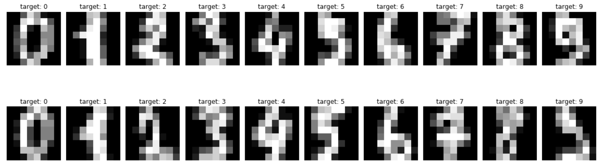

In 2017, researchers from Google published a paper titled “Attention Is All You Need”, which provided the backbone, called a transformer, for AI language models like ChatGPT, Claude, Gemini, and many others that we use so often in today’s world. Transformers are powerful for many cases beyond words and language, as they can accept data and learn complex patterns in how this data predicts certain outputs. In this tutorial, we will learn how to identify when a transformer can be used, how to make certain design decisions that are needed for the transformer to work, and how to use AI to help us build it.
Figure 1: The attention mechanism of a transformer helps a self-driving car combine video and data from sensors to identify hazards
Steps for Building a Transformer
Step 1:
First, we need to identify when a transformer is needed. A transformer is a mathematical process that works with numbers and then returns an output. The data that we use needs to be able to be divided into tokens. A token is a number or set of numbers that describes the thing we are trying to analyze. For ChatGPT, it is trying to analyze words, so each word or pieces of a word needs to be converted into a token, or set of numbers that describes that word. Once we have all the tokens for a sentence, we can combine them all together and feed it into the transformer. Like I mentioned before, transformers can work with data in many instances beyond language. Here are some ways that we can turn our data into tokens in different fields of study:
Field
Example
What counts as a “token”?
Language
Translation
Words or word pieces
Vision
Image classification
Image patches
Audio
Speech-to-text
Short slices of sound
Biology
AlphaFold
Amino acids
Weather
Forecasting models
Grid regions of the atmosphere
As an example, we are going to use pixels from images of hand-drawn numbers as our tokens, and we will try to use the pixels to determine which number was drawn.
On top of this, we often use transformers when we are trying to classify something or output a number that can be checked with the correct answer. For example, in our hand drawn images, we want the transformer to be able to look at all the pixels and return the correct answer for what number has been drawn. To do this in our case, we need to have the correct answer key available. This is called supervised learning.

Figure 2: The hand drawn number images data set contains 8 x 8 pixel images of hand drawn digits, as well as the digits that they represent.
Another criterion for using a transformer is when the data we are working with is very complex. More specifically, we use them when the data is nonlinear and full of complicated interactions between variables.
Finally, we need to understand that transformers require a lot of data, or tokens, to train properly. The more complex the data is, the more of it we need. The hand drawn digit image data set has almost 1800 images to use, which is on the very low end of data sizes that we need for these types of problems. This will work for the small model we are going to build, but in many cases, we may need millions of tokens to train on. If you don’t have access to this much data, you may need to consider a model other than a transformer.
Step 2:
An important thing to consider is how we design the dimensions of the model. A transformer is really just a series of matrix multiplications. We get to decide how big these matrices are and how much information they can hold.
This process can be very detailed, but for your first transformer, we are going to make 2 decisions that will help an LLM make the rest of the less consequential decisions and create the correct architecture.
Decision 1: How do you cut your data into tokens? First, we need to analyze the dimensions of the data we already have. For the hand drawn images, we have an 8 x 8 group of pixels forming each image. We need to decide how to split these pixels up into tokens. 1 pixel per token would be too small because it would not contain enough information for the model to analyze. Dividing the image up into 4 x 4 pixel regions would be too big because that would leave us with only 4 tokens, which is too few tokens for the attention mechanism to compare. Attention is how the model decides which tokens matter most to each other, for example which pixels together form the curve of a 3. Remember, the transformer needs to be able to compare the meaningful information inside all the tokens together. For this example, we are going to use a good balance of the two by creating tokens of 2 x 2 pixel regions, which leaves us 16 tokens per image.
Decision 2: How big should the model be? This is the tricky part. We need to think about the model width, or how many dimensions the model needs. Think of the dimensions as available slots that can hold information. A transformer needs to take the pixel values from your tokens that then learn information about how those tokens relate to themselves and others, and how those relationships tell us which number has been drawn in the image. We need to pick the number of dimensions that will allow the transformer to learn and record these relationships while also not creating too many parameters, or numbers in the transformer’s matrices, that will increase the amount of data that we need. For this problem, we are going to ask an LLM to help us try 3 different widths to see which works best. We are going to try 16, 32, and 64 dimensions. We’ll also fix the depth, the number of times the attention block repeats, at 2. Remember, as the dimensions increase, we will need more data for the model to learn properly. However, the more complex the data is, the more dimensions we need, and determining the right number often requires trying multiple dimensions to see which works best.
Step 3:
Now we are going to use AI to help us build the transformer according to the specifications we have determined. When using AI, it is important to give it adequate information about your data and design choices. For the hand drawn image data, consider a prompt like this:
“Write 3 minimal Vision Transformers in PyTorch to classify the scikit-learn digits dataset (load_digits), and help us determine if 16, 32, or 64 is the best model width for predicting out of sample data.
Data facts: - 1,797 grayscale images, 8x8, pixel values 0 to 16 (normalize them) - 10 classes - Small dataset, so use dropout and weight decay
Model choices: - 2x2 patches (16 tokens) plus a class token - d_model = (16, 32, and 64 width), 2 layers - Choose a sensible number of attention heads and feed-forward size
Include: 5-fold Cross-Validation, a training loop, and final accuracy. Must run on a CPU in only a few minutes. Add short comments explaining each part.”
Step 4:
Now we are going to train the transformer, or use the data to help the transformer adjust its parameters until it can accurately determine which image has been drawn. Look at the above prompt and how we asked the model to include a 5-fold cross validation. This means that we are going to split the data set into a large portion for the model to use in its learning process, and a smaller portion for us to use and determine how the model is performing. We will then repeat this process 5 times. This is very important because we often care most about how accurate the model is in making predictions for data it has never seen before, not just the data it used in the learning process. This is especially important for us because we want to use this never-before-seen data to test whether the 16, 32, or 64 dimensional model is better at predicting the correct digit. We should always do this for supervised learning models where accuracy is important.
Step 5:
Now, execute the python code and start the model training. Based on how you are working on your code, you can ask AI to help you run the script or debug any errors. Once the training is finished, compare the accuracy of the model for each of the dimension sizes on the out-of-sample data. Pick the model with the best accuracy, and you now have transformer with the best width for our problem. In practice you would then retrain at that width on all the data; we stop here because our goal was choosing the width.
Examples
Here is an example of what your python code and output should look like:
import numpy as npimport torchimport torch.nn as nnfrom sklearn.datasets import load_digitsfrom sklearn.model_selection import StratifiedKFoldtorch.set_num_threads(4)# --- 1. Load and prepare the data -------------------------------------digits = load_digits()X = torch.tensor(digits.images /16.0, dtype=torch.float32) # normalize 0-16 -> 0-1y = torch.tensor(digits.target)print(f"Images: {tuple(X.shape)}, classes: {len(y.unique())}")# --- 2. The model: patches -> embeddings -> transformer -> class ------class TinyViT(nn.Module):def__init__(self, d_model, n_heads=4, n_layers=2, patch=2, img=8, n_classes=10):super().__init__()self.patch = patch n_tokens = (img // patch) **2# 16 tokens for 2x2 patchesself.embed = nn.Linear(patch * patch, d_model) # pixels in a patch -> vectorself.cls = nn.Parameter(torch.zeros(1, 1, d_model)) # learnable "class" tokenself.pos = nn.Parameter(torch.zeros(1, n_tokens +1, d_model)) # token positions layer = nn.TransformerEncoderLayer( d_model, n_heads, dim_feedforward=4* d_model, dropout=0.1, batch_first=True, norm_first=True)self.encoder = nn.TransformerEncoder(layer, n_layers, enable_nested_tensor=False)self.head = nn.Linear(d_model, n_classes)def forward(self, x): B, p = x.shape[0], self.patch x = x.unfold(1, p, p).unfold(2, p, p).reshape(B, -1, p * p) # cut into patches x =self.embed(x) x = torch.cat([self.cls.expand(B, -1, -1), x], dim=1) +self.posreturnself.head(self.encoder(x)[:, 0]) # classify from class token# --- 3. Train on one fold, return accuracy ----------------------------def train_and_score(d_model, tr_idx, va_idx, epochs=40): torch.manual_seed(0) model = TinyViT(d_model) opt = torch.optim.AdamW(model.parameters(), lr=3e-3, weight_decay=1e-2)for _ inrange(epochs): model.train() perm = tr_idx[torch.randperm(len(tr_idx))]for i inrange(0, len(perm), 64): b = perm[i:i +64] loss = nn.functional.cross_entropy(model(X[b]), y[b]) opt.zero_grad(); loss.backward(); opt.step() model.eval()with torch.no_grad(): acc =lambda idx: (model(X[idx]).argmax(1) == y[idx]).float().mean().item()return acc(tr_idx), acc(va_idx)# --- 4. Cross-validation over model widths ----------------------------skf = StratifiedKFold(n_splits=5, shuffle=True, random_state=0)print(f"\n{'d_model':>7}{'params':>8} | {'train':>6}{'val (mean ± std)':>18}")for d_model in [16, 32, 64]: n_params =sum(p.numel() for p in TinyViT(d_model).parameters()) tr_accs, va_accs = [], []for tr, va in skf.split(X, y): tr_acc, va_acc = train_and_score(d_model, torch.tensor(tr), torch.tensor(va)) tr_accs.append(tr_acc); va_accs.append(va_acc)print(f"{d_model:>7}{n_params:>8,} | {np.mean(tr_accs):>6.3f} "f"{np.mean(va_accs):>9.3f} ± {np.std(va_accs):.3f}")
In our training run, we found that 32 dimensions fit the data best in the validation set with 0.964 accuracy and minimal variance about that number. Therefore, in our case we can conclude that 32 dimensions was enough for the transformer to learn the complex relationships between the pixels and digits. One caveat to mention is that for this problem, since the images are just 8 x 8 pixels, a transformer probably won’t beat a simpler model such as an MLP. This is just a demonstration.
Conclusion
Congratulations, you have created a modern machine learning model that is the same architectural building blocks as the large language models that mystify millions of people. You now understand basic concepts about the use cases of transformers, tokens, model dimensions, and train-test split. While this tutorial is much simpler than these massive models, these concepts are very important to how they work. If you want to continue learning about transformers, consider looking into how we configure the depth of the network and how we can use different configurations for the learning rate to accommodate more complex data problems.